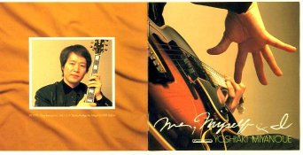
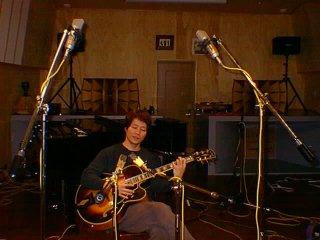

1999.02 河内スタヂオ録音
Me, Myself & I
宮之上貴昭宮之上貴昭 (g)。アンプラグド・ソロ・ギター。河内スタヂオ最初のCD録音
About the Album
作品紹介
「Me,Myself and I」
宮之上貴昭
(アンプラグド・ソロ・ギター)
1999年2月1日～7日
河内スタヂオ(秋田)録音
商品番号: KICJ-373 キングレコード
SOLD OUT
1.Caravan 2.I’ve Grown Accustomed To Her Face 3.Road Song 4.Georgia On My Mind 5.Oleo 6.Moonlight Serenade
7.Besame Mucho 8♪Eye’s Of Dreaｍ （宮之上貴昭オリジナル曲） 9.Mi Cosa 10.Love For Sale 11.Stompin’ At The Savoy 12.Here’s That Rainy Day 13.Misty
Recording Report
レコーディングレポート
宮之上貴昭氏
「ミー、マイセルフ＆アイ」
レコーディング風景
Eye’s Of Dream (宮之上貴昭オリジナル曲)


「宮之上貴昭Ｓ・Ｆ・Ｃ会報 スモーキン3月号」からの抜粋
その日、秋田県・大潟村は記録的な寒波が襲い、気象観測史上初めての-18℃記録しました。
そんな中、僕は額に汗してスタジオに籠もって、新作Ｃ・Ｄのレコーディングに勤しんでいました。何しろ今回のCDは「ソロ」という事で、バンドで録音するのとは大違い。演奏量は10倍はあるだろう。それに、失敗しても人のせいに出来ない！
ドラムが、こうきたから、こう弾こうーとか、ピアノがこういうバッキングしたから、こう行こう、
ベースがこういうラインを弾いたから、こんなのは、どーだ！
ーいわゆる、バンドでの演奏は、そこが楽しい所であるのだけれど、それを全て一人で行わなければならないのぢゃ。
自らを高めたり、安らいだ気持ちにさせたりと、
コントロールするためには、例えば、それがキングレコードのスタジオだったりしたら、果たして、いい演奏が録音出来ただろうか?
「はいテープ回りました。テイク1どーぞ！」
ちょ、ちょっと待ってくれー
と、僕じゃなくても難しいのではないか？ん？
テイクを重ねりゃプロデューサーやエンジニアにも迷惑をかけてしまうし、まして、そんな事を考えれば考える程リラックスした演奏は望めない。
その事を初めから計算して僕は秋田の河内スタヂオでレコーディングする事を心に決めていたのだ。
先月号でも触れたが、彼のスタヂオはハンパではない。恐らく、個人所有のスタジオとしては日本で、その設備、技術に於いて、これほど充実しているスタジオはない。
河内伸介はその昔僕のギターの弟子だったから、音の点で、言いたい事は何でも言えるし、彼もまた、僕のギターの音色や演奏の事を熟知している。
それで今回、ここに拠を構えたという訳ぢゃ。
それでも、１日１０時間近く、スタジオに入ってギターを弾いていると、左手首の関節は痛み、両手の筋肉は麻痺してくる。
「録音する曲を早く仕上げなければ」という気持ちが増々プレッシャーと腕の痛みを後押しする。「ソロギター」なのでＣ・Ｄには１４～５曲収録されるであろう。１曲少なくても５テイク、多いもので、１０テイクを超えた。
しかし、である。帰京前日になっても、半分しか収録出来ていなかった。明日は「きりきりぶらうん」のライブ。何とか、キャンセルし、２日間延長する事にした。腕の痛みと緊張をほぐすために、近く温泉に浸かって休養も取って、レコーディング再会。それでも煮詰まって落ち込んでいると「うちでいい演奏録音出来なきゃ、どこでやったって無理だよ」と河内伸介がタラバガニを料理して、「これを食べて元気出して！」
最高の環境の中、かくして、５日間に及ぶ「ソロギター」の録音を無事終了した。テーブルの上に並んだ２時間テープが１２本。この中からわずかＯＫテイクとなった１時間弱の演奏が、僕の「Ｌ・Ａコネクション」に続く新しいＣＤになります。
Ｃ・Ｄのタイトルは「Ｍｅ，Ｍｙｓｅｌｆ＆Ｉ」で４月２３日、キングレコードから全国一斉販売となります。
タイトルと反対に、ずっとわがままな録音につき合ってくれた河内伸介をはじめ、敬子夫人、連日応援にかけつれてくれて、「今は農閑期」を僕に感じさせてくれた、田中寿文、堤朗の両氏、そして、多くの声援をくれた我がＳ・Ｆ・Ｃの皆様に、心から感謝しています。発売を楽しみにして下さい。
“ Me, Myself ＆I “ ライナーノーツ からの抜粋
奏法もさる事ながら、ソロ・ギタ- に必要なのは、レコーディングする環境でした。
バンドでの演奏と違って、相手がいない訳ですから、 自分を高めたり、
安らいだ気持ちにさせたり と、コントロールしなければなりません。
もし、一般のスタジオで、限られた時間の中、
「はい、宮之上さん、テープ回りました。テイク1ど－ぞ」と言われて、
皆んなが、固唾をのんで見守る中、はたしてソロで、リラックスした、
いい演奏が録音出来るだろうか？
失敗が続いて、テイクを重ねれば、ディレクターやエン
ジニアに迷惑をかけてしまうし、ましてそんな事を考えれば、
余計に、「いい演奏」からは遠ざかってしまいそうです。
時間を気にせずに、リラックスしてレコーディングに臨める環境
に身を置くこと、これが私には最も重要な事でした。
そんな中、かつて私の作品「ウエス・モンゴメリーに捧ぐ」や
「スモーキン」を録音したエンジニア、河内伸介が、自宅のある秋田県大潟
村にレコーディング・スタジオ「河内スタヂオ」を建てました。
親友であり、元、私のギターの弟子、という事もあって、音の点で気に入ら
なければ、言いたい事は何でも話し合えるし、何よりも、私のギターの音色や
奏法、 音楽観までをも熟知している、その彼に録音を依頼して、
私は秋田に向かうことになりました。
こけら落としの終わったばかりの「河内スタヂオ」はとても近代的な建物で
重さが１０トンもある巨大コンクリート製の スピーカー・ボックスが2つ並び、
オーディオ・ ルームを兼ねていました。残響を0．7秒にし
り、ブースを設けたりと、随所に、音へのこ わりを見せていて、
個人所有のスタジオと 思えない程、録音設備が充実していました。
「河内スタヂオ」は地元でも話題になり、新聞で大きく紹介されました。
いよいよ録音の開始となりました。ギター の生音を録音する、という事で、
適したマイク を選ぶ事から始めました。マイクによって、 生される音の表情が、
かなり違うのに驚きましたが、話し合いの結果、2種類、計4本のマイクが
録音に使われる事になりました。
「宮さん、テープは刷しっ放しにしてるから、好きな時、気分の乗った時に演奏して」′
一般のスタジオでは、おそらくありえない 言葉です。
とてもリラックス出来て、気持ち良い演奏を始められました。
それでも、ソロ・ギターですから、煮詰まってきます。
そんな所 「休憩！」と言って二階へ上り、テレビでも見て、地酒を一杯ひっかけて
小一時間休み、気が上昇したところで、またスタジオに戻り、録音を再開しました。
こうして、ゆっくりとした ペースながら、順調にレコーディングは進んで行きました。